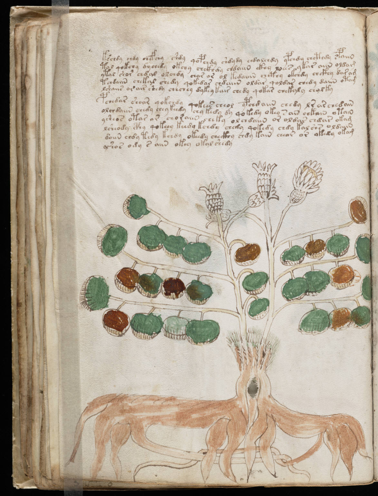

f34v
1kschdy chdy chefchy shdy qopchdy shdydy chdalchdy ypchdy chcthdy spaiin2tol qokchy dychedy okchy chckhdy chdaiin ckhy loees ykar aiin oldam3ytal seor chdal olchdy char or ol kedaiiin chcthy okchdy chckhy dasam4tchdaiin chekal shedy qokedar chdaiin oldar qoldar chedy daiin otam5lshaiir orair shedy chechey dykey kair chedy qokar chekaly cholky6pchedar seear qokchdy qokees cheol ypchdaiin chedy lr ar chedain7olchdaiin chedy chey keedy chy kedy dy qokedy okey sair chkain otain8ysheos otar ar choraiin cheky olchdaiin or oldar chdar okam9lsheody cphy qokeey keedy kchdy chedy qokedy chdy kal shs oldaiin10daiin chdy tedy kchdy okeedy checkhy chdy kain cheor or okedy okam11yshos ody s aiin okoy okal shedy
